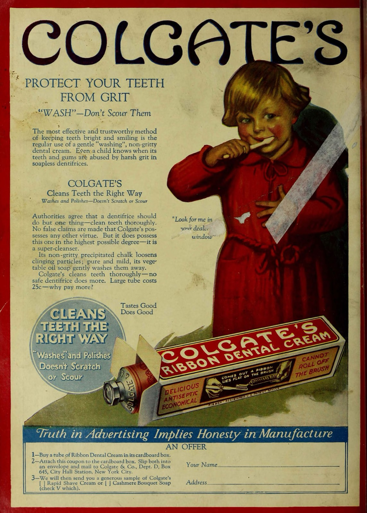

치약은 많이 짤수록 좋을까? — 광고가 말하지 않는 충치와 불소의 진실
아침 세면대 앞. 칫솔을 집어 들고 치약 뚜껑을 열면 손은 늘 하던 대로 움직입니다. 칫솔모 한쪽 끝에서 반대쪽 끝까지, 끊기지 않게, 끝은 살짝 말아 올려서. 광고 속 그 모양입니다. 하얀 칫솔 위에 물결처럼 올라앉은 치약 한 줄. 그렇게 짜야 입안이 개운하고, 그렇게 짜야 충치가 안 생길 것 같습니다.

"치약을 넉넉히 짜야 깨끗이 닦이지."
이 믿음에는 두 가지가 섞여 있습니다. 하나는 거품의 양이 세정력이라는 느낌이고, 다른 하나는 치약이 많을수록 충치 예방 성분도 많이 들어간다는 추론입니다. 둘 다 그럴듯합니다. 그런데 치과 공중보건 기관들의 지침과 연구를 따라가 보면 방향이 다릅니다.
치약에서 충치를 막는 것은 짜는 양이 아니라 불소의 농도와 치아에 머무는 시간입니다.
매일 아침 습관처럼 치약을 가득 짜 왔거나, 아이 치약의 불소가 찜찜해서 아예 불소 없는 치약을 골랐다면 끝까지 읽어 보실 만합니다. 결론부터 말씀드리면, 어른은 칫솔 머리를 치약으로 덮을 필요가 없고, 어린아이는 쌀알이나 완두콩만큼이면 되며, 닦고 나서는 뱉되 물로 헹구지 않는 편이 낫습니다. 왜 그런지는 충치가 생기는 방식에서 시작해야 합니다.
충치는 문지르기의 문제가 아니라 저울의 문제다
충치를 '이에 낀 음식이 썩는 것'으로 떠올리기 쉽습니다. 실제로는 화학에 가깝습니다. 치아 표면에 붙어 사는 세균이 음식 속 당을 먹고 산을 내놓습니다. 그 산이 법랑질과 상아질의 광물을 녹입니다. 이것이 탈회입니다. 그런데 녹기만 하는 것은 아닙니다. 침이 산을 중화하고, 침 속 칼슘과 인산이 녹아 나간 자리를 다시 채웁니다. 이것이 재광화입니다. 충치 연구자 페더스톤은 충치를 한 번의 사건이 아니라 탈회와 재광화가 수없이 되풀이되는 연속체라고 정리했습니다[1].
그러니 질문을 바꿔야 합니다. '얼마나 세게 문지르느냐'가 아니라 '저울이 어느 쪽으로 기울어 있느냐'입니다. 식사 때마다 산 쪽으로 기울고, 침이 다시 되돌립니다. 되돌리는 쪽이 늘 이기면 충치는 생기지 않습니다. 산 쪽이 자주, 오래 이기면 구멍이 납니다.
여기서 치약의 역할이 정해집니다. 치약은 저울의 한쪽에 무게를 보태는 도구입니다. 미국치과의사협회가 설명하는 치약의 구성은 단순합니다. 가벼운 연마제가 음식 찌꺼기와 표면 착색을 긁어내고, 세제가 거품을 만들어 치약을 입안에 퍼뜨리며 세정을 돕고, 불소가 법랑질을 단단하게 해 충치와 싸웁니다[2]. 거품과 향은 느낌을 만들고, 연마제는 칫솔질을 거들고, 저울을 실제로 되돌리는 것은 불소입니다.
불소는 '먹는 약'이 아니라 '바르는 약'이다
불소가 왜 효과가 있는지는 오래 연구됐습니다. 미국 질병통제예방센터(CDC)의 2001년 권고문은 한 문장으로 정리합니다. 불소의 주된 효과는 치아가 난 뒤에, 치아 표면에서 국소적으로 일어난다는 것입니다. 플라크와 침 속에 낮은 농도로 남아 있는 불소가 멀쩡한 법랑질이 녹는 것을 억제하고, 이미 녹은 법랑질이 다시 채워지는 것을 촉진하며, 세균이 당을 산으로 바꾸는 과정 자체를 방해합니다[3]. 다시 채워진 결정은 원래 광물보다 산에 잘 녹지 않습니다[1].
비유하자면 불소는 삼켜서 몸 안에서 도는 약이 아니라, 상처에 바르는 연고에 가깝습니다. 연고는 바른 자리에 머물러야 듣습니다. 한 번에 두껍게 바른다고 더 듣지는 않고, 바르자마자 씻어 내면 효과가 줄어듭니다. 불소도 그렇습니다. 치아 표면과 침 속에 얼마나 오래, 얼마나 진하게 남아 있느냐가 관건입니다.
그렇다면 '많이 짜기'는 어디에 해당할까요. 치약의 불소 농도는 통에 적혀 있습니다. 미국에서 일반 판매되는 치약은 대개 1,000~1,500ppm입니다[4]. 이 숫자는 짜는 양으로 바뀌지 않습니다. 완두콩만큼 짜든 칫솔모를 다 덮든, 치아에 닿는 치약의 농도는 같습니다. 양이 늘면 거품과 삼킬 가능성이 늘 뿐입니다.
그래서 얼마나 짜야 하나
농도가 실제로 효과를 가른다는 점은 코크란 연합의 2019년 체계적 고찰이 보여 줍니다. 1955년부터 2014년까지 발표된 무작위 시험 96편을 모은 분석입니다. 어린이와 청소년의 영구치에서, 1,000~1,250ppm 불소치약은 불소 없는 치약보다 새 충치를 분명히 줄였고 근거의 확실성은 '높음'이었습니다. 1,450~1,500ppm은 1,000~1,250ppm보다 조금 더 줄였습니다. 반면 유치에서 550ppm은 1,055ppm과 견줘 차이가 없었고, 440ppm은 1,450ppm보다 충치가 더 많았습니다. 연구진의 결론은 농도가 높을수록 더 많이 막는다는 것, 다만 어린아이는 불소증 위험과 저울질해야 한다는 것이었습니다[5].
여기서 읽어야 할 것은 '진할수록 좋다'가 아니라 '효과를 가른 변수는 농도였다'는 점입니다. 어느 시험도 '많이 짠 집단'과 '조금 짠 집단'을 견주지 않았습니다. 견준 것은 통에 적힌 ppm이었습니다. 낮은 농도의 어린이용 치약을 넉넉히 짜는 것보다, 권장 농도의 치약을 조금 쓰는 쪽이 이 결과에 맞습니다.
지침들은 이 결과에 맞춰 양을 정해 둡니다. 미국치과의사협회는 3세 미만에게 '얇게 바른 정도, 또는 쌀알 크기', 3세부터 6세까지는 '완두콩 크기 이하'를 권합니다[4]. CDC는 완두콩 크기를 약 0.25g으로 적고, 6세 미만은 보호자가 직접 닦아 주거나 지켜보면서 남은 치약을 뱉게 하라고 덧붙입니다[3]. 어른의 양을 그램으로 못 박은 지침은 찾기 어렵습니다. 영국 구강건강재단의 표현이 가장 솔직합니다. 칫솔 머리를 치약으로 덮을 필요는 없다는 것입니다[6]. 영국 NHS는 어른에게 1,350ppm 이상인 치약을 권합니다[7].
광고가 그리는 긴 치약 띠는 화면에서 보기 좋은 양이지, 어느 지침에도 없는 양입니다.
닦고 나서 물로 헹구면 안 되는 이유
불소가 바르는 약이라면 다음 결론은 저절로 따라옵니다. 양치 직후 물로 입안을 여러 번 헹구는 습관은 방금 바른 약을 씻어 내는 일입니다. NHS는 이렇게 적습니다. 양치 직후 입을 헹구지 말 것, 남아 있는 치약의 농축된 불소를 씻어 내 버리기 때문이라고요[7]. 영국 보건당국의 공식 예방 지침도 같습니다. 뱉어 내되 물로 헹구지 않아서 불소 농도가 희석되지 않게 하라는 것입니다[8]. 구강건강재단은 불소가 치아에 더 오래 머물도록 뱉고 헹구지 말라고 권합니다[6].
다만 근거의 강도는 솔직하게 적어 둘게요. 2012년 영국치과저널에 실린 전문가 합의 논문은 양치 후 헹굼 습관이 불소치약의 효과를 줄일 수도 높일 수도 있다고 보면서, 고품질 연구가 부족한데도 국제 지침들은 일관된 권고를 내고 있다고 썼습니다[9]. 즉 '뱉고 헹구지 않기'는 불소의 작동 원리에서 연역된 권고이고, 대규모 시험으로 못 박힌 사실은 아직 아닙니다. 그래도 방향은 분명합니다. 많이 짜는 것보다 덜 헹구는 것이 불소를 더 오래 남깁니다.
한국에서는 이 점이 조금 더 무겁습니다. 수돗물에 불소를 넣어 충치를 줄이는 사업이 한때 여러 지역에서 시행됐지만, 2018년 강원도 영월의 정수장을 마지막으로 모두 중지됐습니다[10]. 수돗물에서 불소를 얻지 못하니 치아가 불소를 만나는 자리는 사실상 치약뿐이고, 그 치약을 바르자마자 씻어 내면 남는 것이 없습니다.
3·3·3이라는 숫자는 어디서 왔나
치약 양만큼 오래된 믿음이 하나 더 있습니다. 하루 세 번, 식후 3분 이내, 3분 동안. 이른바 333 법칙입니다. 학교에서 배웠고 포스터에서 봤고 어른들이 외우게 했습니다. 그런데 2023년 대한구강보건협회 회장은 언론에 이렇게 말했습니다. 333 법칙도 사실 뚜렷한 근거가 없다고요[11].
국제 지침이 말하는 횟수는 다릅니다. NHS는 하루 두 번, 한 번에 약 2분을 권하고, 그 두 번 가운데 하나는 반드시 자기 직전이어야 한다고 못 박습니다[7]. 영국 예방 지침도 '자기 전 마지막, 그리고 다른 한 번 이상'입니다[8]. 왜 밤일까요. 다시 저울입니다. 낮에는 침이 흐르며 산을 되돌리지만, 잠든 사이에는 그 방어가 약해집니다. 자기 전 양치는 습관의 문제가 아니라, 방어가 멈추는 시간에 맞춘 처방입니다.
'식후 3분 이내'도 그대로 따르기 어렵습니다. 먹고 마신 뒤 입안이 산을 중화하는 데는 최대 한 시간이 걸린다고 구강건강재단은 설명합니다[6]. 산에 잠겨 잠시 무른 치아 표면을 곧바로 연마제로 문지르는 것이 늘 좋은 선택은 아닙니다. 횟수와 분 수를 외우는 것보다, 밤에 꼭 닦고 모든 면을 빠뜨리지 않는 쪽이 지침에 가깝습니다.
불소가 걱정되는 분들께
불소 없는 치약을 고르는 이유는 대개 하나입니다. 화학물질을 매일 입에 넣는 것이 찜찜해서입니다. 그 걱정이 가리키는 실제 위험은 치아 불소증입니다. 치아가 만들어지는 시기에 불소를 너무 많이 삼키면 법랑질에 흰 줄이나 얼룩이 생기는 것입니다. 미국치과의사협회는 중요한 단서를 하나 답니다. 이미 난 치아에는 불소증이 생기지 않는다는 것입니다[4]. CDC는 심한 불소증도 미용상의 문제이지 치아 기능을 해치는 것은 아니라고 적습니다[3].
그러니 걱정의 과녁을 옮겨야 합니다. 어른이 불소치약을 피할 이유는 이 걱정에서는 나오지 않습니다. 걱정이 유효한 쪽은 6세 미만 아이이고, 거기서도 해법은 불소를 빼는 것이 아니라 양을 줄이고 삼키지 않게 지켜보는 것입니다. 협회는 권장량을 지키면 과다 노출을 최소화할 수 있다고 씁니다[4]. 코크란 분석이 보여 줬듯 농도를 너무 낮추면 예방 효과가 사라집니다[5]. 쌀알과 완두콩은 그 두 위험 사이에서 찾은 타협점입니다.
한 가지 더. 가글이 양치를 대신해 주지는 않습니다. 미국치과의사협회는 가글을 매일의 칫솔질과 치실을 대신하는 것이 아니라 보태는 것으로 분류하고, 6세 미만에게는 권하지 않습니다[12]. 액체는 치아에 붙은 막을 걷어 내지 못합니다. 걷어 내는 것은 칫솔이고, 걷어 낸 자리에 남아 일하는 것이 불소입니다.
필자 한마디
치약을 가득 짜 온 습관을 탓할 일은 아닙니다. 그 그림을 수십 년 동안 매일 보여 준 쪽은 광고였고, 우리는 본 대로 따라 했을 뿐입니다.
"치약은 양이 아니라 농도와 시간으로 일합니다." 통에 적힌 ppm을 한 번 확인하고, 양은 줄이고, 뱉은 뒤 헹굼은 줄이고, 자기 전 한 번은 빠뜨리지 않는 것. 광고가 말하지 않는 네 가지는 이게 전부입니다.
내일 아침 칫솔 위에 올라가는 치약의 길이를 한 번 보세요. 그 길이는 누가 정한 것일까요.
정리하자면 이렇습니다. 충치는 세균의 산과 침의 되돌림이 겨루는 저울이고, 치약에서 저울을 되돌리는 성분은 불소입니다. 불소는 치아 표면에 머물며 일하므로 효과를 정하는 것은 짜는 양이 아니라 농도와 머무는 시간입니다. 그래서 지침은 어린아이에게 쌀알과 완두콩만큼을, 어른에게는 칫솔 머리를 덮지 않을 만큼을 권하고, 닦은 뒤에는 뱉되 물로 헹구지 말라고 합니다. 하루 세 번 3분이라는 숫자보다 자기 직전 한 번이 더 중요합니다.
오늘 밤 양치를 하고 나서, 헹구는 물 한 모금을 건너뛰어 보세요. 그리고 치약 통 뒷면에서 ppm 숫자를 찾아보세요.
이 글은 일반적인 정보 제공을 위한 것이며 개인의 진단이나 치료를 대신하지 않습니다. 충치나 잇몸 질환이 있거나, 삼킴 조절이 어려운 어린아이, 구강건조증이 있는 분은 치약의 종류와 양, 헹굼 방법을 치과 의료진과 상의하세요.
참고문헌
- Featherstone, J. D. B. Dental caries: a dynamic disease process. Australian Dental Journal 53(3): 286–291, 2008. 링크 ↩
- American Dental Association. Toothpaste. MouthHealthy. 링크 ↩
- Centers for Disease Control and Prevention. Recommendations for using fluoride to prevent and control dental caries in the United States. MMWR Recommendations and Reports 50(RR-14): 1–42, 2001. 링크 ↩
- American Dental Association. Fluoride: topical and systemic supplements. ADA Oral Health Topics. 링크 ↩
- Walsh, T., Worthington, H. V., Glenny, A.-M., Marinho, V. C. C., Jeroncic, A. Fluoride toothpastes of different concentrations for preventing dental caries. Cochrane Database of Systematic Reviews 2019(3): CD007868. 링크 ↩
- Oral Health Foundation (영국). Caring for my teeth and gums. 링크 ↩
- NHS (영국 국민보건서비스). How to keep your teeth clean. 링크 ↩
- Office for Health Improvement and Disparities (영국). Delivering better oral health: an evidence-based toolkit for prevention, Chapter 2: Summary guidance tables for dental teams. 링크 ↩
- Pitts, N., Duckworth, R. M., Marsh, P., Mutti, B., Parnell, C., Zero, D. Post-brushing rinsing for the control of dental caries: exploration of the available evidence to establish what advice we should give our patients. British Dental Journal 212(7): 315–320, 2012. 링크 ↩
- 류재인, 정세환, 이새롬, 임아랑. 수돗물불소농도조정사업 중단시점의 안산시 만 12세 청소년의 영구치 우식 발생 실태. 대한구강보건학회지 45(2): 71–76, 2021. 링크 ↩
- 머니투데이. 잇몸병 막을 칫솔질…이젠 '333' 아닌 '0123 법칙' 기억하세요, 2023-04-11 (해설 기사). 링크 ↩
- American Dental Association. Mouthwash (mouthrinse). MouthHealthy. 링크 ↩